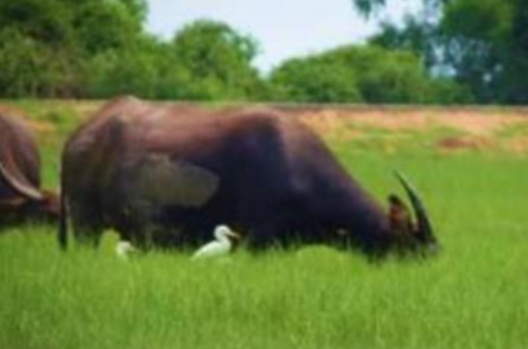
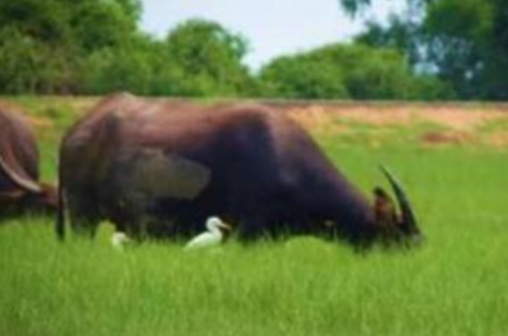

สารบัญ
การพัฒนาศักยภาพทรัพยากรนิเวศชุมชนเกาะหมาก จังหวัดพัทลุง เพื่อการท่องเที่ยววิถีไทย
สถานที่ เกาะหมาก
ชุมชนเกาะหมากอำเภอปากพะยูน จังหวัดพัทลุง ตั้งอยู่ในทะเลสาบสงขลาตอนกลาง อันประกอบด้วย
เกาะต่าง ๆ จำนวน 12 เกาะ ในเขตสัมปทานรังนก ได้แก่ เกาะสี่เกาะห้า เกาะท้ายถ้ำดา เกาะรูสิ้ม เกาะร้านไก่
เกาะหน้าเทวดา เกาะกระ เกาะราบ เกาะป้อย เกาะตาโส เกาะยายโส เกาะเข็ม เกาะมวย เกาะกันตัง และ
พื้นที่ที่อยู่นอกเขตสัมปทานรังนก ประกอบด้วย 5 เกาะ คือ เกาะมดแดง เกาะหินล่อน เกาะหมากที่ประกอบด้วย
เกาะนก (เกาะโคบ) เกาะเสือ และเกาะเสือนุ้ย ซึ่งเกาะหมากเป็นเกาะที่มีประชาชนอาศัยและเป็นพื้นที่ที่มีระบบ
นิเวศอันโดดเด่นอีกแห่งหนึ่งในลุ่มน้ำ โดยเฉพาะนกนางแอ่นที่เป็นตัวดัชนีชี้วัดความอุดมสมบูรณ์ของป่าชายเลน
อัตลักษณ์การทำประมงพื้นบ้านของคนในเกาะที่สามารถทำการประมงได้ตลอดทั้งปีและได้ผลผลิตที่สามารถทำให้
คนในชุมชนมีกินมีใช้ นอกจากนี้แล้วระบบนิเวศที่โดดเด่นอีกอย่างของพื้นที่แห่งนี้คือ นกหลากหลายสายพันธุ์ที่
หมุนเวียนเปลี่ยนตามฤดูกาลตลอดจนระบบนิเวศสามน้ำที่โดดเด่นทำให้พันธุ์พืชสัตว์น้ำระบบนิเวศด้านอื่น ๆ ของ
เกาะหมากมีความหลากหลายที่เอื้อต่อการดำรงชีวิตของคนบนเกาะได้พึ่งพาและใช้ประโยชน์
การท่องเทียวเชิงนิเวศ
รูปแบบหนึ่งของการท่องเที่ยวที่มุ่งความสนใจในแหล่งท่องเที่ยวทางธรรมชาติมีความเกี่ยวเนื่องกับระบบนิเวศ ตลอดจนลักษณะทางวัฒนธรรมที่มีอยู่ในพื้นที่แห่งนั้น มีการจัดการที่คำนึงถึงมาตรการในการอนุรักษ์ เพื่อลดผลกระทบที่จะเกิดขึ้นต่อทรัพยากรธรรมชาติและสิ่งแวดล้อม กิจกรรมท่องเที่ยวก่อให้เกิดกระบวนการเรียนรู้ร่วมกันระหว่างผู้ที่มีส่วนเกี่ยวข้อง ในด้านของการสร้างจิตสำนึก การปลูกฝั่งด้านจริยธรรมความรับผิดชอบที่มีทรัพยากรธรรมชาติและสิ่งแวดล้อมในระบบนิเวศ
ทรัพยากรนิเวศของชุมชนเกาะหมาก
ค่าศักยภาพทรัพยากรนิเวศด้านของคุณค่าของทรัพยากรนิเวศทางบก
พืชในท้องถิ่น
มีค่าเฉลี่ยระดับศักยภาพของตัวชี้วัด เท่ากับ 4 ตัวชี้วัด ในนี้มีศักยภาพทรัพยากรนิเวศ อยู่ในระดับสูงกล่าวได้ว่า พืชในท้องถิ่นมีคุณค่าในการใช้ประโยชน์ทางด้านการดำเนินชีวิตและ เศรษฐกิจเป็นอย่างดีมีปริมาณเพียงพอต่อความต้องการในการบริโภคของคนในชุมชนและเป็นพืชที่มี โภชนาการ หากเหลือการบริโภคในครัวเรือนก็สามารถนำไปจำหน่ายในท้องตลาดได้ เช่น ตาลโตนด ดั้งเดิมที่มีพื้นที่ปลูกเป็นบริเวณกว้างในหมู่บ้านแหลมกรวด มะม่วงหิมพานต์และพืชพันธุ์ อื่นๆอีกหลากหลายชนิด ซึ่งสามารถบ่งบอกความอุดมสมบูรณ์ของดิน เป็นต้นสัตว์จำพวกนก
มีค่าเฉลี่ยระดับศักยภาพของตัวชี้วัด เท่ากับ 34 ตัวชี้วัด ในที่นี้มีศักยภาพทรัพยากร นิเวศอยู่ในระดับสูง ซึ่งสัตว์จำพวกนกในพื้นที่ชุมชนแห่งนี้สามารถสังเกตเห็นฝูงนกน้ำชนิดต่าง ๆได้ ด้วยตาเปล่า เนื่องจากนกน้ำในบริเวณป่าพรุเกาะโคบมีความคุ้นเคยกับวิถีความเป็นอยู่ของคน ซึ่งในช่วงต้นปีจะมีนกอพยพมาจากละแวกใกล้เคียง เช่น ทะเลน้อย อุทยานนกน้ำคูขุด โดยที่ นกดังกล่าวจะเป็นนกประจำถิ่นที่มีอยู่เดิมแต่จะมีปริมาณเพิ่มมากขึ้นกว่าปกติ เข้ามาหา อาหารบริเวณหมู่บ้านเขาชัน และป่าพรุเกาะโคบ โดยสัตว์จำพวกนกที่พบเห็นส่วนใหญ่เป็น นกชนิดเดียวกับนกที่อาศัยอยู่ในบริเวณ อุทยานนกน้ำคูขุด ได้แก่ นกอีโก้ง นกกระสาแดง นก ตีนเทียน กาน้ำเล็ก นกยางควาย เป็นต้น ซึ่งลักษณะนกที่พบเห็นส่วนใหญ่จะเป็นนก น้ำ (Aquatic birds) นกเหล่านี้มีการปรับตัวและพัฒนาการในการหาอาหารในน้ำเป็นอย่างดีซึ่งจาก ลักษณะดังกล่าวที่สามารถบ่งบอกถึงสภาพของห่วงโซ่อาหารในพื้นที่ชุมชนแห่งนี้ได้อย่างชัดเจน คือ หากมีปริมาณของนกมากก็จะแสดงว่าในแหล่งน้ำมีสิ่งมีชีวิตที่นกใช้เป็นอาหารเพื่อการดำรงชีพได้ เช่น สัตว์น้ำขนาดเล็ก และพืชพรรณน้ำและสายน้ำซึ่งบริเวณพื้นที่ของชุมชนเกาะหมากมีพื้นน้ำราย รอบและเป็นป่าพรุ ป่าชายเลน โดยส่วนใหญ่ประมาณ 4,250ไร่ (สำนักงานทรัพยากรธรรมชาติและ สิ่งแวดล้อม จังหวัดพัทลุง, 2557 ) ซึ่งเป็นแหล่งอาหารที่สำคัญ เช่น ต้นลำพู พืชพรรณไม้ในป่าพรุ หรือพืชพรรณที่ปกคลุมดิน ซึ่งเหมาะแก่การวางไข่ของนก นอกจากนี้ผู้วิจัยยังสังเกตเห็นนกนางแอ่น จำนวนไม่น้อย ที่ออกหากินอาหารบริเวณพื้นที่เกาะหมากและเกาะใกล้เคียงซึ่งเป็นนกนางแอ่นอาศัย อยู่ในหมู่เกาะสัมปทานรังนก (หมู่เกาะสี่เกาะห้า) อยู่ทางด้านทิศตะวันตกของเกาะหมากมีระยะทาง ไม่ไกลมากนัก เป็นรังนกนางแอ่นที่มนุษย์สามารถบริโภคได้ สร้างรายได้ให้แก่คนในชุมชนเกาะหมาก และคนจังหวัดพัทลุง ด้วยสาเหตุนี้นกจึงเป็นตัวชี้วัดความอุดมสมบูรณ์ของป่าชายเลนในพื้นที่แห่งนี้ได้ เป็นอย่างดี ฝูงของนกน้ำนานาชนิด
นกกาน้ำเล็ก (Microcarbo niger)
ฝูงของนกน้ำนานาชนิด
นกกาน้ำเล็ก (Microcarbo niger)
 นกอีโก้ง (Porphyrio porphyrio)
นกอีโก้ง (Porphyrio porphyrio)
 นกกระสาแดง (Ardea purpurea)
นกตีนเทียน (Himantopus himantopus)
นกยางควาย (Bubulcus ibis)
หมูของชาวบ้าน (หมูน้ำ)กำลังหาอาหารในป่าพรุเกาะโคบ

ควายน้ำกำลังหาอาหารในป่าพรุเกาะโคบ
นกกระสาแดง (Ardea purpurea)
นกตีนเทียน (Himantopus himantopus)
นกยางควาย (Bubulcus ibis)
หมูของชาวบ้าน (หมูน้ำ)กำลังหาอาหารในป่าพรุเกาะโคบ

ควายน้ำกำลังหาอาหารในป่าพรุเกาะโคบ
สัตว์ประจำถิ่น
สัตว์ที่พบในพื้นที่โดยเฉพาะสัตว์ที่แสดงความเป็นเอกลักษณ์และวิถีชีวิตของคนใน ชุมชน มีค่าเฉลี่ยระดับศักยภาพของตัวชี้วัด เท่ากับ 3.4 ตัวชี้วัดในนี้มีศักยภาพทรัพยากรนิเวศอยู่ใน ระดับปานกลางจากรูปที่ 11-12 แสดงให้เห็นว่า หมูน้ำและควายน้ำในพื้นที่ชุมชนเกาะโคบมีลักษณะ ที่โดดเด่นที่มีความอยู่ดีคือ ความเป็นอยู่ควบคู่กับวิถีชีวิตของคนที่แตกต่างจากพื้นที่อื่นเนื่องจากเป็น สัตว์ที่ชาวบ้านในชุมชนปล่อยเลี้ยงตามธรรมชาติโดยให้หาอาหารจากป่าพรุ เช่น แห้ว ที่ให้ สารอาหารอย่างแป้งนอกจากแป้งแล้วยังเพิ่มกากใยอาหารทำให้ขับถ่ายดีไม่มีสารตกค้าง และหญ้าที่มี ทั้งแป้ง ไฟเบอร์ และเซลลูโลสที่ให้พลังงานแก่วัว ควายในพื้นที่ป่าพุ ซึ่งอาหารของสัตว์ประจำถิ่น เหล่านี้จะสามารถลดค่าใช้จ่ายในการซื้ออาหารสำเร็จรูปและยังส่งผลดีแก่สัตว์เลี้ยงในพื้นที่ที่มีสุขภาพ ดีและไม่มีสารเคมีใดๆ เจือปนอยู่ในร่างกายพืชพันธุ์ไม้ที่พบเห็นน้อยในปัจจุบัน
มีค่าเฉลี่ยระดับศักยภาพของตัวชี้วัดเท่ากับ 2 ตัวชี้วัดนี้มี ศักยภาพทรัพยากรนิเวศอยู่ในระดับต่ำ จากการพูดคุยกับตัวแทนชุมชนเกาะหมากได้ความว่า “ในพื้นที่เกาะหมากมีพืชไม้พบเห็นได้น้อยบางชนิดก็สูญเสียและลดน้อยลงจากเดิมในอดีตอย่างมาก สาเหตุที่ก็เพราะมีการบุกรุกพื้นที่ป่าอนุรักษ์เพื่อการเกษตรพืชเชิงเดี่ยว เช่น ยางพารา และปาล์มทำ ให้พืชพรรณไม้เหล่านี้ลดน้อยลงอีก ทั้งไม่มีการอนุรักษ์และฟื้นฟูอย่างจริงจังไม่เกิดขึ้นภายในพื้นที่ ชุมชนเกาะหมากโดยพืชพันธุ์ไม้ที่พบเห็นน้อย ได้แก่ ปลาไหลเผือก กำแพงเจ็ดชั้นเถาวัลย์เปรี้ยง” ซึ่ง พืชพันธุ์เหล่านี้ไม่เหมาะที่จะพัฒนาเพื่อการท่องเที่ยวเนื่องจากการท่องเที่ยวจะเป็นตัวเปลี่ยนแปลง ทรัพยากรที่มีอยู่ให้เหลือน้อยลงด้วยปัจจัยทางพฤติกรรมของนักท่องเที่ยวสัตว์ที่พบเห็นได้น้อยในปัจจุบัน
มีค่าเฉลี่ยระดับศักยภาพของตัวชี้วัดเท่ากับตัวชี้วัดนี้ มีศักยภาพ ทรัพยากรนิเวศอยู่ในระดับต่ำ จากการพูดคุยขณะทำแบบประเมินหัวข้อนี้กับ 1.9 ประชากรตัวอย่าง ได้แสดงความคิดเห็นว่า “ในพื้นที่ชุมชนเกาะหมากในอดีตยังพบเห็นสัตว์ประเภท กระจง ไก่แจ้ ตัว นิ่ม แต่ในปัจจุบันสัตว์เหล่านี้ได้หายไปจากพื้นที่ เนื่องจากการบุกรุกพื้นที่ป่าและการนำมาบริโภคเป็น อาหารทำให้สัตว์เหล่านี้เหลือน้อยลงและบางชนิดก็สูญพันธุ์ไม่สามารถพบเห็นได้อีกเลย ในพื้นที่ ชุมชนเกาะหมากทั้งนี้ในพื้นที่ชุมชนเกาะหมากซึ่งทั้งพืชและพืชพรรณและสัตว์ที่พบเห็นได้น้อยใน ปัจจุบันยังไม่มีศักยภาพในการพัฒนาเพื่อการท่องเที่ยว เนื่องจากขาดองค์ประกอบของด้านการ จัดการและการป้องกันและอนุรักษ์สิ่งแวดล้อมทรัพยากรนิเวศเป็นบทบาทที่สำคัญหากจะมีการ พัฒนาการท่องเที่ยวเพื่อการท่องเที่ยวเชิงนิเวศจะต้องเป็นการท่องเที่ยวเพื่อป้องกันและลดผลกระทบ ต่อสิ่งแวดล้อมในพื้นที่ไม่ใช่เป็นการสร้างความเสี่ยงให้เกิดภายในพื้นที่ค่าศักยภาพทรัพยากรนิเวศคุณค่าด้านทรัพยากรนิเวศทางน้ำ
คุณค่าด้านทรัพยากรนิเวศทางน้ำมีความสำคัญต่อการดำรงชีวิตของประชาชนและสัตว์สามารถบ่งบอกความอุดมสมบูรณ์ของแหล่งน้ำในพื้นที่นั้น ทั้งนี้ทรัพยากรนิเวศทางน้ำสามารถนำมาเป็นแนวทางเพื่อพัฒนาการท่องเที่ยวให้เกิดเป็นแหล่งเรียนรู้เกี่ยวกับด้านระบบนิเวศทางน้ำ ซึ่งผลจากการประเมินศักยภาพทรัพยากรนิเวศทางน้ำเพื่อการพัฒนาการท่องเที่ยวความหลากหลายของสัตว์น้ำ
นอกจากจะพบสัตว์น้ำประเภทปลาแล้ว สัตว์น้ำประเภทกุ้งก็ยังมีความสำคัญทางเศรษฐกิจเช่นเดียวกัน ชนิดแรกที่พบ คือ กุ้งก้ามกราม (Macrobrahim roesenbergii) เป็นกุ้งก้ามกรามที่มีขนาด ตัวที่ใหญ่ เนื้อแน่น และรสชาติหวาน มีวงจรชีวิตในน้ำกร่อย-น้ำจืด พบมากที่สุดในช่วงเดือนตุลาคม-มีนาคม ราคา กิโลกรัมละ 200 - 300 บาท ส่งผลทำให้คนในชุมชนเกาะหมาก มีรายได้เฉลี่ยจากการจับสัตว์น้ำเดือนละ 20,000 บาทต่อครัวเรือน ชนิดที่สอง คือ กุ้งหัวมัน มีชื่อวิทยาศาสตร์ว่า Metapenaeus brevicornis กุ้งหัวมัน มีลักษณะที่เด่นชัด คือ มันกุ้งที่มีปริมาณเยอะอยู่บริเวณส่วนหัวที่มีขนาดใหญ่ เนื้อแน่น และมี วงจรชีวิตในน้ำกร่อย-น้ำเค็ม พบมากที่สุดในช่วงเดือนเมษายน-เดือนกันยายน ซึ่งกุ้งทั้งสองชนิดนี้สามารถพบใน พื้นที่ทะเลสาบสงขลาตอนกลาง (เกาะหมาก)ได้ตลอดทั้งปี ผลัดเปลี่ยนไปตามระบบนิเวศของน้ำนอกจากจะ สามารถพบกุ้งได้ตลอดทั้งปีแล้วระบบนิเวศน้ำที่เปลี่ยนแปลงไปจะส่งผลให้กุ้งในพื้นที่บริเวณนี้มีเอกลักษณ์ที่โดด เด่นทั้งขนาดของกุ้งและรสชาติที่หวานแตกต่างจากที่อื่นจึงทำให้กุ้งในทะเลสาบสงขลามีราคาการจำหน่ายในบาง ช่วงถึงกิโลละ 90-160 บาท เฉลี่ยต่อวัน ชาวประมงในพื้นที่สามารถจับได้ถึงวันละ 10 - 20 กิโลกรัม สร้างรายได้ จากการทำประมงถึงวันละ 900-1,500 บาท มีรายได้ต่อเดือนเฉลี่ยเดือนละ 30,000 ต่อครัวเรือน


น้ำจืดภายในเกาะ
มีค่าระดับความศักยภาพของตัวชี้วัดเท่ากับ 4 ซึ่งหมายถึง ตัวชี้วัดนี้มีศักยภาพ ทรัพยากรนิเวศอยู่ในระดับสูง จากการเก็บข้อมูลจากประชากรตัวอย่าง พบว่า น้ำจืดภายในเกาะมี มากพอใช้ตลอดทั้งปีไม่ขาดแคลนน้ำมานานกว่า 10 ปี แล้วโดยน้ำในชุมชนเกาะหมาก มีคุณภาพที่ดี ไม่มีกลิ่นเหม็น ไม่มีตะกอนโคลน ซึ่งมีแหล่งน้ำที่สำคัญอย่างทะเลสาบ บ่อบาดาล ระบบน้ำประปา ของหมู่บ้าน และคลองลำคลองที่สำคัญภายในชุมชน ซึ่งเพียงพอต่อความต้องการอุปโภคและบริโภคป่าชายเลน ป่าพรุ
มีค่าเฉลี่ยระดับศักยภาพของตัวชี้วัดเท่ากับ 3.4 ซึ่งหมายถึง ตัวชี้วัดนี้มีศักยภาพ ทรัพยากรนิเวศอยู่ในระดับปานกลาง จากการพูดคุยกับประชากรตัวอย่างที่เป็นเจ้าหน้าที่หน่วยงาน พิทักษ์และดูแลสิ่งแวดล้อมในพื้นที่ได้ความว่า ป่าพรุในพื้นที่เกาะหมากมีพื้นที่ค่อนข้างเยอะมีลักษณะ เป็นบริเวณกว้างและเกิดขึ้นเองตามธรรมชาติ มีน้ำท่วมขังอยู่บริเวณชายฝั่งรอบเกาะ ทั้งนี้ป่าพรุใน ชุมชนเกาะหมากได้รับอิทธิพลจากน้ำในทะเลสาบสงขลาตอนกลาง เป็นพื้นที่ที่มีความ หลากหลายทางชีวภาพมีการเจริญเติบโตและการกระจายของพืชพรรณนานาชนิดและเป็นแหล่ง อนุบาล แหล่งอาหารสัตว์ที่อาศัยอยู่บริเวณนั้น นอกจากนี้บริเวณป่าพรุยังมีทิวทัศน์ที่ สวยงาม น่าพักผ่อนหย่อนใจ ดังนั้นป่าพรุเกาะโคบ มีความเหมาะสมสำหรับแนวทางการพัฒนาเพื่อ การท่องเที่ยวเชิงนิเวศ โดยนำเสนอในรูปแบบของกิจกรรมการท่องเที่ยวเชิงนิเวศที่เน้นการพักผ่อน หย่อนใจ และต้องการเรียนรู้ทางธรรมชาติวิทยา

พืชพรรณน้ำ/พืชพรรณชายน้ำ
มีค่าเฉลี่ยระดับศักยภาพของตัวชี้วัดเท่ากับ 3.3 ซึ่งหมายถึง ตัวชี้วัด นี้มีศักยภาพทรัพยากรนิเวศอยู่ในระดับปานกลาง จากการนั่งเรือสำรวจกับชาวบ้านในพื้นที่ผู้ศึกษาได้ พบเห็นพืชพันธุ์น้ํา/พืชพรรณชายน้ำ ประมาณ 3 - 5 ชนิด ที่มีอยู่ภายในชุมชนเกาะหมาก เช่น ต้นลำพู ที่สามารถพบเห็นในรูปในปริมาณที่มาก ซึ่งลำพูชนิดนี้จะสามารถอยู่บริเวณรอบๆ ชายฝั่งของชุมชนเกาะหมาก มีประโยชน์ในเรื่องของการช่วยชะลอการพังทลายของหน้าดินบริเวณ ริมน้ำ เป็นแหล่งอาหารของสัตว์นานาชนิด ลดความแรงของลมและยังเป็นสมุนไพรรักษาโรค ส่วนพืช อีกชนิดที่สามารถพบเห็นโดยทั่วไป เมื่อมายังชุมชนเกาะหมาก คือ ต้นกระจูดหนู เป็นพืชที่มีลำต้นที่เหนียว สามารถนำมาพัฒนาเป็นผลิตภัณฑ์ของฝากประเภทจักรสานแสดงถึงการ เป็นอัตลักษณ์ของชุมชนเกาะหมาก นอกจากนี้ยังพบพืชพรรณชายน้ำอีกหลายชนิดที่สามารถนำมา พัฒนาเพื่อเป็นมูลค่าเพิ่มได้ เช่น ต้นจาก นำผลมาแปรรูปเป็นอาหาร ลำต้นและใบ พัฒนา เป็นเครื่องจักรสาน ต้นปรงทะเล ใช้เป็นยารักษาโรค ต้นเหงือกปลาหมอ ใช้เป็น ยาสมุนไพรรักษาโรค สาหร่ายน้ำนำมาเป็นอาหารของสัตว์เลี้ยงในพื้นที่อย่าง หมูวัวและควาย เป็นต้นการตื้นเขินของทะเลสาบสงขลาตอนกลาง
มีค่าเฉลี่ยระดับศักยภาพของตัวชี้วัดเท่ากับ 3.4 ซึ่ง หมายถึง ตัวชี้วัดนี้มีศักยภาพทรัพยากรนิเวศอยู่ในระดับปานกลาง จากการบอกเล่าของผู้ที่มีความรู้ ภายในชุมชนทำให้ทราบว่า “ในปัจจุบันการตื้นเขินของทะเลสาบสงขลาตอนกลางมีผลกระทบมากต่อ การดำรงชีวิตของชาวประมง อาจจะเป็นเพราะการปล่อยน้ำทิ้งจากภาคครัวเรือน การปล่อยน้ำเสีย จากการทำบ่อกุ้ง ทำให้น้ำมีความสกปรกเพิ่มขึ้น ส่งผลให้เกิดการเจริญเติบโตของวัชพืชในทะเลสาบ ส่งผลเพิ่มขึ้นเรื่อย ๆ และเกิดการทับถม ซึ่งในขณะเดียวกันกับอิทธิพลการวางเครื่องมือจับปลาใน ทะเลสาบขวางทางน้ำ ก็ส่งผลทำให้กากตะกอนไม่สามารถระบายได้ผลกระทบที่กล่าวมาในข้างต้น ล้วนแล้วแต่เป็นสาเหตุที่ก่อให้เกิดการตื้นเขินของทะเลสาบและบริเวณโดยรอบของชุมชนเกาะหมาก และปัญหาการตื้นเขินนี้ก็เป็นสาเหตุที่ทำให้ชาวประมงในพื้นที่ลุ่มน้ำทะเลสาบทำการประมงยากกว่า ในอดีตทั้งทางด้านการสัญจรทางน้ำหรือการวางเครื่องมือประมง จำเป็นจะต้องเพิ่มมาตรการการดูแล และฟื้นฟูทะเลสาบสงขลา ต้นลำพู (Sonneratia caseolaris) บริเวณชายฝั่งรอบรอบชุมชนเกาะหมาก จังหวัดพัทลุง
ต้นลำพู (Sonneratia caseolaris) บริเวณชายฝั่งรอบรอบชุมชนเกาะหมาก จังหวัดพัทลุง
 ต้นกระจูดหนู (Aepironia articulate) บริเวณทะเลสาบสงขลา ชุมชนเกาะหมาก จังหวัดพัทลุง
ต้นกระจูดหนู (Aepironia articulate) บริเวณทะเลสาบสงขลา ชุมชนเกาะหมาก จังหวัดพัทลุง
 ต้นจาก (Nypa fruticans) บริเวณป่าพรุบ้านแหลมกรวด ชุมชนเกาะหมาก จังหวัดพัทลุง
ต้นปรงทะเล (Acrostichum aureum) บริเวณป่าพรุบ้านเกาะโคบ ชุมชนเกาะหมาก จังหวัดพัทลุง
ต้นจาก (Nypa fruticans) บริเวณป่าพรุบ้านแหลมกรวด ชุมชนเกาะหมาก จังหวัดพัทลุง
ต้นปรงทะเล (Acrostichum aureum) บริเวณป่าพรุบ้านเกาะโคบ ชุมชนเกาะหมาก จังหวัดพัทลุง
 เหงือกปลาหมอ (Acanthus ebracteatus) บริเวณริมคลองปากบางนาคราช ชุมชนเกาะหมาก
เหงือกปลาหมอ (Acanthus ebracteatus) บริเวณริมคลองปากบางนาคราช ชุมชนเกาะหมาก
กิจกรรมการท่องเที่ยว
ชุมชนเกาะหมากมีทรัพยากรนิเวศที่หลากหลายและกระจายตามหมู่บ้านต่างๆในชุมชนเกาะหมาก สามารถพัฒนาให้เกิดเป็นกิจกรรมการท่องเที่ยวเชิงนิเวศสามารถเกิดการเรียนรู้และได้ประสบการณ์ระหว่างการเดินทางท่องเที่ยวภายในชุมชนเกาะหมาก ซึ่งกิจกรรมการท่องเที่ยวภายในชุมชนเกาะหมาก มีดังต่อไปนี้
กิจกรรมการท่องเที่ยวที่ 1 เรียนรู้การทำเครื่องมือประมง
-ลักษณะของกิจกรรม นักท่องเที่ยวมีโอกาสได้เรียนรู้ถึงเครื่องมือประมง ลักษณะต่าง ๆ ที่ ชาวประมงพื้นบ้านใช้เป็นเครื่องมือในการจับสัตว์น้ำแต่ละชนิด ซึ่งจะมีรูปร่างและรูปทรงและลักษณะของ การใช้งานที่แตกต่างกันขึ้นอยู่กับชนิดของสัตว์น้ำ นักท่องเที่ยวยังได้เรียนรู้เกี่ยวกับวิธีการทำเครื่องมือ ประมง ตั้งแต่การคัดเลือกวัสดุในท้องถิ่นที่ต้องมีความแข็งแรงและทนทาน การเตรียมวัสดุ อุปกรณ์ เทคนิคต่างๆในการประกอบเครื่องมือประมง ตลอดจนนักท่องเที่ยวยังมีโอกาสลง มือทำเครื่องมือประมงอย่างไซ ที่ใช้เพื่อจับสัตว์น้ำอย่างกุ้งและปลา ขนาดเบ็ดราว ที่ใช้เพื่อจับสัตว์น้ำอย่างกุ้งก้ามกราม เป็นต้น และนอกจากนี้เพื่อเป็นของฝากของที่ระลึกที่บ่งบอกถึง ความเป็นเอกลักษณ์ของพื้นที่แห่งนี้
การประกอบชิ้นส่วนของเครื่องมือประมง
ชาวบ้านสอนวิธีการทำไซแก่นักท่องเที่ยว
ไซที่พร้อมใช้งานและจำหน่ายเป็นสินค้าที่ระลึก
กิจกรรมการท่องเที่ยวที่ 2 สัมผัสและเฝ้าดูวิถี
-ลักษณะของกิจกรรม นักท่องเที่ยวได้เรียนรู้ถึงวิธีการใช้ เครื่องมือประมงแต่ละชนิด กับช่วงฤดูกาลที่เหมาะสม บริเวณที่สามารถวางเครื่องมือประมง ทิศทางของลม น้ำขึ้นและน้ำลง เป็นต้น ทดลองวางเครื่องมือประมง นอกจากนี้กิจกรรมก็อย่างนี้ก็ยังรวม ไปถึงการเก็บเกี่ยวสัตว์น้ำ หลังจากที่ได้วางเครื่องมือประมงเรียบร้อยแล้วกิจกรรมการท่องเที่ยวที่ 3 ชื่นชม จับจ่าย ผลผลิตจากทะเลชุมชน
-ลักษณะของกิจกรรม พบเห็นสัตว์น้ำนานาชนิดที่มีอยู่ในทะเลสาบสงขลาและได้เรียนรู้เกี่ยวกับ ประเภทของสัตว์น้ำที่ได้หลังจากเก็บเกี่ยวจากชาวประมงพื้นบ้านทั้งปลาท้องถิ่น ปลาหายาก กุ้งชนิดต่างๆ ตลอดจนการอุดหนุนสัตว์น้ำจากชาวประมงในพื้นที่ เพื่อนำมาแปรรูปเป็นอาหารในราคาที่ ถูกกว่าผ่านพ่อค้าคนกลาง
กิจกรรมการท่องเที่ยวที่ 4 ล่องเรือชมระบบนิเวศป่าพรุ
-ลักษณะของกิจกรรม ธันวาคม-มีนาคม ของทุกปี ได้สัมผัสกับความงดงามของธรรมชาติของวิว ป่าพรุขนาดกว้าง ที่เขียวขจี ไปด้วยพืชที่ปกคลุมดิน พบเห็นนกน้ำนานาชนิดและสัตว์เลี้ยงของชาวบ้าน (หมูน้ำและควายน้ำ) ในละแวกใกล้เคียงที่ปล่อยให้หาอาหารเองตามธรรมชาติในป่าพรุ
กิจกรรมการท่องเที่ยวที่ 5 ชม ชิม ปรุง อาหารท้องถิ่น
-ลักษณะของกิจกรรม เรียนรู้ถึงวัตถุดิบที่มีในท้องถิ่นทั้งพืชผักและอาหารสด เมื่อนำมาปรุงเข้า ด้วยกันก็จะเกิดเป็นอาหารพื้นบ้านที่มีส่วนผสมของสมุนไพรที่ชาวบ้านปลูกไว้นานาชนิด เกิดเป็นภูมิ ปัญญาทางด้านอาหารมีความชัดเจนในเรื่องของรสชาติที่มีความเผ็ด เค็ม และหวาน โดยมีผักเหนาะเป็น เครื่องเคียง เรียนรู้สูตรการทำอาหารแบบฉบับของคุณใต้ โดยมีแม่ครัวที่ขึ้นชื่อเรื่องของการทำอาหารคอย ให้ความรู้ และนักท่องเที่ยวยังมีโอกาสได้ทำอาหารจากของจริงหรือการนำวัตถุดิบเหล่านี้ให้เกิดเป็นเมนู หลากหลาย ทำให้เกิดการแลกเปลี่ยนเรียนรู้ระหว่างกันและกัน ซึ่งเมนูที่บ่งบอกความเป็นท้องถิ่นของที่นี่ คือ กุ้งเผา แกงคั่วกะทิปลาดุกทะเล ปลามิหลัง และปลากระบอกทอดขมิ้น โดยมีวิธีการทำเมนูอาหารที่ น่าสนใจกิจกรรมการท่องเที่ยวที่ 6 ดูวิถีชีวิต ของคนใต้โหนด
-ลักษณะของกิจกรรม นักท่องเที่ยวสัมผัสวิถีชีวิตของคนในชุมชนที่ทำมาหากินเกี่ยวกับ ตาลโตนดดั้งเดิม ในชุมชนทั้งการปีนต้นตาลโตนด การเตรียมกระบอกตาล การปาดตาล และการเก็บ น้ำตาลสด การเคี่ยวตาลโตนด และกระบวนการแปรรูปจากตาลโตนด เป็นผลิตภัณฑ์ต่าง ๆ เพื่อสร้าง มูลค่าเพิ่ม อีกทั้งเรียนรู้ถึงคุณและประโยชน์ของตาลโตนดที่สามารถนำมาสร้างมูลค่าได้ตั้งแต่รากสู่ยอดกิจกรรมการท่องเที่ยวที่ 7 อุดหนุนของฝากจากชุมชน
-ลักษณะกิจกรรม ด้วยศักยภาพของทรัพยากรนิเวศที่มีความหลากหลาย เช่น สัตว์น้ำในพื้นที่ ชุมชนเกาะหมาก ทำให้สัตว์น้ำที่ชาวประมงจับมาได้นั้นที่เหลือจากการรับประทานอาหารในครัวเรือน ประชาชนในชุมชน จึงเกิดการคิดค้นและพัฒนาการแปรรูปสัตว์น้ำเพื่อถนอมคุณค่าทาง อาหารให้สามารถใช้ประโยชน์ได้ให้ยาวนานขึ้นกว่าเดิม ซึ่งก่อให้เกิดรายได้เสริมแก่คนในชุมชน กิจกรรมนี้ นักท่องเที่ยวมีโอกาสเรียนรู้ถึงวิธีการถนอมคุณค่าทางอาหารจากประชาชนชุมชนเกาะหมากที่ทำภายใน ครัวเรือน อีกทั้งนักท่องเที่ยวยังสามารถอุดหนุนและเลือกซื้อผลิตภัณฑ์ชุมชน เพื่อนำเป็นของฝากไปได้ เช่นเดียวกันกิจกรรมการท่องเที่ยวที่ 8 รำลึกประวัติศาสตร์รัชกาลที่ 5 ที่เกาะหมาก
-ลักษณะของกิจกรรม เทศกาลงานประเพณีที่จัดขึ้น อยู่ในเดือนกรกฎาคมของทุกปี เพื่อสักการะ และเรียนรู้ประวัติศาสตร์ความเป็นมาเกี่ยวกับการเดินทางเสด็จประพาสล่ากระจงของรัชกาลที่ 5 และ เรื่องเล่าที่สำคัญเกี่ยวกับความเชื่อภายในชุมชน จากการเล่าโดยปราชญ์ชาวบ้านเส้นทาง และ แผนที่การท่องเที่ยว
ผลจากการอภิปรายกลุ่มและระดมความคิดเห็นจากการมีส่วนร่วมของคนภายในชุมชนทำให้ทราบว่า
กิจกรรมการท่องเที่ยวชุมชนเกาะหมากทั้ง 8 กิจกรรม ซึ่งรูปแบบของกิจกรรมการท่องเที่ยวนั้นสามารถนำมา
เชื่อมโยงเป็นเส้นทางการท่องเที่ยวเชิงนิเวศชุมชนเกาะหมากได้โดยเส้นทางการท่องเที่ยวจะเป็นการออกแบบที่
เหมาะสมกับช่วงเวลาของกิจกรรมนั้น ๆ ซึ่งจะก่อให้เกิดเส้นทางการท่องเที่ยวที่มีลักษณะของการท่องเที่ยวที่
แตกต่างกันออกไปและมีความหลากหลายของเส้นทางการท่องเที่ยวด้วยลักษณะแนวคิดดังกล่าว จึงสามารถนำ
กิจกรรมการท่องเที่ยวมาสร้างเป็นเส้นทางการท่องเที่ยวได้ 2 เส้นทาง ซึ่งทั้งสองเส้นทางจะมีลักษณะและ
เอกลักษณ์ของกิจกรรม ซึ่งจะดึงดูดใจของนักท่องเที่ยวในรูปแบบที่แตกต่างกันดังรายละเอียด ดังต่อไปนี้

{kind=link}
{kind=link}
{kind=link}
{kind=link}
{kind=link}
{kind=link}
{kind=link}
{kind=link}
{kind=link}
{kind=link}
{kind=link}
{kind=link}
{kind=link}
{kind=link}
{kind=link}
{kind=link}
{kind=link}
{kind=link}
{kind=link}
{kind=link}
{kind=link}
{kind=link}
{kind=link}